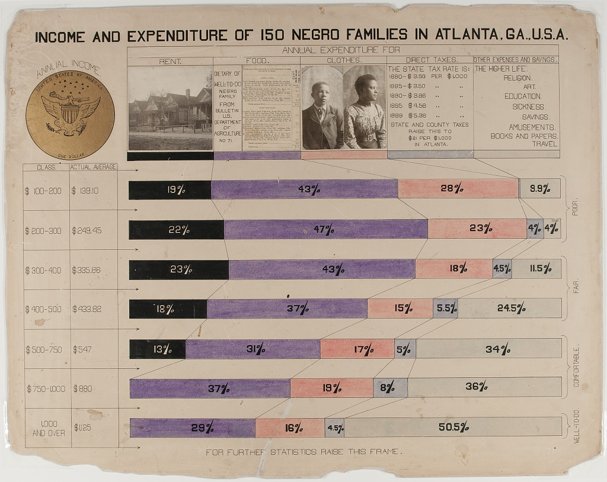

# Use the `#` symbol to tell R to ignore the text
## Name: <include your full name>
## Date: <sometimes you may want to add a date>
## Purpose: <insert the goals or purpose of the RScript>DATA 202 - Week 5
Univariate analysis
Part I: Context
Types of studies and sampling strategies
The methods used to collect sample data for statistical analysis is extremely important.
If sample data are not collected appropriately, resulting statistical analyses will be futile.
As a result, planning a study by identifying research questions, the population and sample of interest, and selecting the appropriate research method(s) that will be used to analyze data that is collected are all essential parts in the statistical data analysis process.
Understanding experimental and observational study designs
There are many different types of research studies.
Some studies use non-traditional methods (such as oral traditions) to collect data, while others focus on more traditional methods (such as surveys) to analyze data on a sample or a population.
These data collection methods produce a set of observations upon which statistical analyses can be applied. We consider two core study designs in statistical data analysis: experimental studies and observational studies.
Experimental study: In an experimental study, a treatment is applied to a sample of interest to observe its effects. There is generally a control group and a treatment group used to understand the effects of the treatment. Individual observations are referred to as experimental units whereas studies involving humans are generally defined as study subjects.
Observational study: In an observational study, specific characteristics of a sample or population are observed and measured but individual observations or subjects of study are not influenced or modified in any way.
Three types of observational studies
Identify and describe the different sampling methods
There are two broad categories of selecting members of a population to generate sample data:
Probability sampling
Non-probability sampling
Within these two broad categories are other methods based on the needs of the study. Each methods is used to support statistical data analysis with some methods providing stronger evidence than others.
Example 5.1: The Atlanta University Studies
Example 5.2: The Atlanta University Studies

Example 5.3: The Atlanta University Studies
Example 5.4: The Atlanta University Studies

Example 5.5: The Atlanta University Studies

Example 5.6: The Atlanta University Studies
Example 5.7: The Atlanta University Studies

Example 5.8: The Atlanta University Studies

Example 5.9: The Atlanta University Studies
Example 5.10: The Atlanta University Studies

Example 5.11: The Black Census
Example 5.12: The Black Census reports
Part II: Content
The Big Picture
Prior to jumping into more details about univariate data examples in the next section, it will be important to gather a “big picture” view of the field. This big picture view will provide us with a high-level description of the various topics we will cover in the course.
Population parameter
A number which summarizes the entire group.
Sample statistic
A single number that summarizes a subset of data, or the sample.

Confidence interval (CI)
Range of likely or plausible values for a population parameter.
Based on a sample and statistics from that sample.
Margin of error represents the number of standard deviations on a statistic.
Hypothesis test
Statistical procedure used to test an existing claim about a population.
Test is based on data; most ideally data collected via probability sampling.
\(H_0\) - Null hypothesis: If data supports the claim, fail to reject \(H_0\)
\(H_a\) - Alternative hypothesis: If data does not support claim, reject \(H_0\)

Analysis of variance (ANOVA)
Comparing means of more than two populations.
F-statistic is a ratio that is used to compare variability between sets.
Multiple comparison procedures
Set of statistical tests that compare means to each other.
Examples include Turkey’s test, Least significant difference (LSD), pairwise t-test
These tests are only conducted if you analysis of variance identifies differences
Interaction effects
Interaction effects are relevant to statistical models that use two or more variables.
Correlation
Measures the strength and direction of a linear relationship between two variables.
Linear regression
Helps make predictions for one variable based on the values of another.
There are many types of regression:
Simple linear regression
Multiple linear regression
Logistic regression
Non-linear regression
Chi-square test
When using correlation and regression analyses, one core assumption is that the variables are quantitative in nature.
We use a chi-square test to study categorical variables.
In the example above, the null hypothesis is that there is no relationship between gender and highest level of education; the alternative hypothesis is that there is a relationship between gender and highest level of education.
Part III: Code
Our coding tasks this week will provide an overview of Lab 1.
Lab 1 focused on univariate statistics.
Univariate statistics refer to analyses that describe a single variable or attribute.
Open RStudio.
Task 0: Start a new project
First, you will need to navigate to: File > New Project
Select the first option: New Directory.

Then you will want to select the New Project option.

Select the directory where you wish to store your project.

Then, name your project to an appropriate title. Consider stats-pt21.

Be sure to place the project in your preferred directory.
One good option is to make a sub-folder in your Documents.

Click the box at the bottom right of the pop-up window.
We generally want to start a new project in a new RStudio session.
Then click Create Project.
Task 1: Open a new RScript
Now we will open a new RScript.
Navigate to File > New File > RScript.
This RScript file is what you will use to outline your analysis.
Task 2: Write a preamble
A preamble is similar to the heading of a paper.
The preamble contains information that will be useful for you and your collaborators.
Remember to use the # symbol to write your preamble.
Task 3: Check your working directory
Prior to inserting any code, it is generally helpful to check your working directory.
This will ensure that you are in the right location to call and save files.
# get the working directory
getwd()If, for any reason, the working directory is different from where you saved your R-project, check in the top right of your screen. Here, you should be able to select stats-pt2 or open the project using the menu options.
Task 4: Install your packages
We will use the install.packages function to complete a few tasks.
Any required packages are generally placed at the very top of our code.
install.packages("tidyverse", repos = "http://cran.us.r-project.org")
install.packages("remotes", repos = "http://cran.us.r-project.org")Task 5: Load your libraries
After using the install.packages function, we need to load specific libraries.
Similar to installing packages, we generally load libraries at the very top of our code.
# load libraries
library(tidyverse)
library(remotes)Task 6: Call in the critstats data package
We will use the remotes::install_github() command to install packages to call in data that I have prepared in a package for our course. The remotes::install_github() command communicates with GitHub to access files.
remotes::install_github("professornaite/critstats", force=TRUE)Task 6-a: Load the critstats library
Next, we load the critstats library which will give us access to the package’s contents.
library(critstats)Task 7: View datasets in the current R session
RStudio has a lot of pre-loaded data sets that we can view or use to practice on different types of variables. We use the data() function to view all of the data sets loaded in R.
data()A new window should open in your RStudio session.
Task 8: View datasets only in the critstats data package
We can also view only the data sets loaded into the critstats package.
data(package="critstats")A new window containing only the critstats data should open in your RStudio session.
Task 9: View documentation for another data package called datasets
data(package="datasets")Task 10: View documentation for the entire critstats data package
??critstatsTask 11: View documentation for a specific data set
We will select the africa_data_all data set and view its documentation.
??africa_data_allThis documentation is the codebook for the data. It contains more specific information about the data frame, each of the variables, and any sourcing information.
Task 12: Assign a dataset to an object for efficiency
If we want to call a data set more efficiently, we can assign it to an object.
The df object is a short name for data frame.
We will assign df1 using our assignment operator to the data set.
df1 <- africa_data_allTask 13: Run a simple command
We can run simple commands on a data frame using the shorthand object we assigned to it.
Let’s use the glimpse() function to explore the africa_data_all data frame that we assigned to the object df1.
glimpse(df1)Rows: 116
Columns: 13
$ country <chr> "Nigeria", "Ethiopia", "Egypt", "DR Congo", "South A…
$ pop <dbl> 206139589, 114963588, 102334404, 89561403, 59308690,…
$ pop.yearly.change <dbl> 2.58, 2.57, 1.94, 3.19, 1.28, 2.98, 2.28, 3.32, 1.85…
$ pop.net.change <dbl> 5175990, 2884858, 1946331, 2770836, 750420, 1728755,…
$ density <dbl> 226, 115, 103, 40, 49, 67, 94, 229, 18, 25, 83, 26, …
$ area <dbl> 910770, 1000000, 995450, 2267050, 1213090, 885800, 5…
$ migrants <dbl> -60000, 30000, -38033, 23861, 145405, -40076, -10000…
$ fertility.rate <dbl> 5.4, 4.3, 3.3, 6.0, 2.4, 4.9, 3.5, 5.0, 3.1, 4.4, 2.…
$ med.age <dbl> 18, 19, 25, 17, 28, 18, 20, 17, 29, 20, 30, 17, 22, …
$ urban.pop <dbl> 52, 21, 43, 46, 67, 37, 28, 26, 73, 35, 64, 67, 57, …
$ world.share <dbl> 2.64, 1.47, 1.31, 1.15, 0.76, 0.77, 0.69, 0.59, 0.56…
$ pop_in_mill <dbl> 206.13959, 114.96359, 102.33440, 89.56140, 59.30869,…
$ year <dbl> 2020, 2020, 2020, 2020, 2020, 2020, 2020, 2020, 2020…Task 14: View your data
We can use the view() function to see our entire data frame.
view(df1)You may have noticed that a new window opened so that you can view() the entire data set. Sometimes, it is inefficient to use this command. Let’s look at two other options.
Task 14-a: View the head of your data
We use the head function to get a closer look at the first few observations.
# use the `head` function to view the top of the data
head(df1)# A tibble: 6 × 13
country pop pop.yearly.change pop.net.change density area migrants
<chr> <dbl> <dbl> <dbl> <dbl> <dbl> <dbl>
1 Nigeria 2.06e8 2.58 5175990 226 9.11e5 -60000
2 Ethiopia 1.15e8 2.57 2884858 115 1 e6 30000
3 Egypt 1.02e8 1.94 1946331 103 9.95e5 -38033
4 DR Congo 8.96e7 3.19 2770836 40 2.27e6 23861
5 South Africa 5.93e7 1.28 750420 49 1.21e6 145405
6 Tanzania 5.97e7 2.98 1728755 67 8.86e5 -40076
# ℹ 6 more variables: fertility.rate <dbl>, med.age <dbl>, urban.pop <dbl>,
# world.share <dbl>, pop_in_mill <dbl>, year <dbl>Change the number of observations that you want to view in the data frame.
# use the `head` function to view ten (10) observations at the top of the data
head(df1, n=10)# A tibble: 10 × 13
country pop pop.yearly.change pop.net.change density area migrants
<chr> <dbl> <dbl> <dbl> <dbl> <dbl> <dbl>
1 Nigeria 2.06e8 2.58 5175990 226 9.11e5 -60000
2 Ethiopia 1.15e8 2.57 2884858 115 1 e6 30000
3 Egypt 1.02e8 1.94 1946331 103 9.95e5 -38033
4 DR Congo 8.96e7 3.19 2770836 40 2.27e6 23861
5 South Africa 5.93e7 1.28 750420 49 1.21e6 145405
6 Tanzania 5.97e7 2.98 1728755 67 8.86e5 -40076
7 Kenya 5.38e7 2.28 1197323 94 5.69e5 -10000
8 Uganda 4.57e7 3.32 1471413 229 2.00e5 168694
9 Algeria 4.39e7 1.85 797990 18 2.38e6 -10000
10 Sudan 4.38e7 2.42 1036022 25 1.77e6 -50000
# ℹ 6 more variables: fertility.rate <dbl>, med.age <dbl>, urban.pop <dbl>,
# world.share <dbl>, pop_in_mill <dbl>, year <dbl>Task 14-b: View the tail of your data
We use the tail function to get a closer look at the last few observations.
# use the `tail` function to view the top of the data
tail(df1)# A tibble: 6 × 13
country pop pop.yearly.change pop.net.change density area migrants
<chr> <dbl> <dbl> <dbl> <dbl> <dbl> <dbl>
1 Cabo Verde 598682 0.93 5533 149 4030 -1227
2 Western Sahara 587259 1.96 11273 2 266000 5600
3 Mayotte 335995 3.03 9894 896 375 0
4 Sao Tome & Pr… 231856 1.97 4476 242 960 -600
5 Seychelles 107660 0.51 542 234 460 -200
6 Saint Helena 5314 -1.12 -60 14 390 0
# ℹ 6 more variables: fertility.rate <dbl>, med.age <dbl>, urban.pop <dbl>,
# world.share <dbl>, pop_in_mill <dbl>, year <dbl>Change the number of observations that you want to view in the data frame.
# use the `tail` function to view ten (10) observations at the top of the data
tail(df1, n=10)# A tibble: 10 × 13
country pop pop.yearly.change pop.net.change density area migrants
<chr> <dbl> <dbl> <dbl> <dbl> <dbl> <dbl>
1 Eswatini 1.21e6 0.76 9152 70 17200 -5268
2 Djibouti 1.14e6 1.39 15606 49 23180 900
3 Réunion 9.82e5 0.8 7744 393 2500 -630
4 Comoros 8.52e5 1.83 15301 458 1861 -2000
5 Cabo Verde 5.99e5 0.93 5533 149 4030 -1227
6 Western Saha… 5.87e5 1.96 11273 2 266000 5600
7 Mayotte 3.36e5 3.03 9894 896 375 0
8 Sao Tome & P… 2.32e5 1.97 4476 242 960 -600
9 Seychelles 1.08e5 0.51 542 234 460 -200
10 Saint Helena 5.31e3 -1.12 -60 14 390 0
# ℹ 6 more variables: fertility.rate <dbl>, med.age <dbl>, urban.pop <dbl>,
# world.share <dbl>, pop_in_mill <dbl>, year <dbl>Task 15: Make and save a plot
The goal of this last task is to learn how to save a plot.
On the bottom left of your RStudio session, you should notice a few tabs.
The second tab is the Plots tab.

Plots tab.Task 15-a: Make a plot
We will make a random plot using the plot command (the plot itself is not important for now).
plot(df1$pop)Whenever you make a plot, you can save it in your working directory.
Be sure to check your working directory using the getwd command prior to saving.
Task 15-b: Save a plot
Whenever you want to save a plot, you can do so manually in directory portion of your RStudio session.
Navigate to the bottom right portion of your RStudio session.
Got to the Plots tab.
- Run the code for your plot, or navigate to your plot using the arrows.
Click Export
- You can save your file as a
.pdfor as an image.
- You can save your file as a
Later, we will learn to customize plots and insert them into reports and papers.
Task 16: Run univariate statistics in R
We will generate some code to examine univariate statistics in R. This will help you with HW 2.
Take the plot of data for two variables, \(x\) and \(y\) below.
Noticing that there is a relationship between \(x\) and \(y\), a first step is to run univariate functions on each variable individually.
Task 16-a: Measures of center
# mean of x
mean(x)[1] 0.03163502# mean of y
mean(y)[1] 4.95324# median of x
median(x)[1] -0.09398661# median of y
median(y)[1] 5.070926Note: the median of a continuous variable constitutes the point at which the function of the distribution has the value 0.5
Given the nature of the variables, we will not compute the mode. Take note, howevever, that a table can be used to find the mode in a discrete variable.
# Let some variable V contain a set of values
v <- c(1, 1, 2, 3, 4, 5, 5, 6, 7, 7, 7, 8, 8, 8, 8, 9)
mode(v)[1] "numeric"The output is not what we desire. We can create a table to get the values we’d like.
# Let some variable z be a set of values
table.v <- table(v)
table.vv
1 2 3 4 5 6 7 8 9
2 1 1 1 2 1 3 4 1 The table shows us the mode of the variable.
Task 16-b: Measures of variation
# range of x
max(x)[1] 2.387233min(x)[1] -2.183967# create an object for the range
range.x = max(x) - min(x)
range.x # recall that we only stored the value in the last line, we must call it separately[1] 4.571199# range of y
max(y)[1] 9.831654min(y)[1] -0.6718717# create an object for the range
range.y = max(y) - min(y)
range.y[1] 10.50353# standard deviation of x
sd(x)[1] 0.9452844# standard deviation of y
sd(y)[1] 2.04768Task 16-c: Measures of relative standing
# Interquartile range of x
IQR(x) # IQR computes the spread of the middle 50 percent of the values in X[1] 1.362935# Interquartile range of y
IQR(y) # IQR computes the spread of the middle 50 percent of the values in Y[1] 2.333997Task 16-d: Plots
# boxplot
boxplot(x)
boxplot(y)
# histogram
hist(x)
hist(y)# density curve
plot(density(x))
plot(density(y))Next up: Week 6
Footnotes
We are in part two of our course, so I have chosen
stats-pt2for this project’s title. We’ll be starting other projects in parts three and four of our course. Note: there will be no project for part one of our course.↩︎